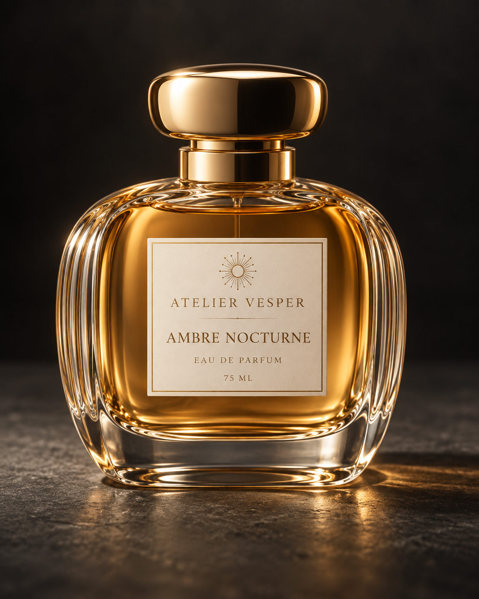
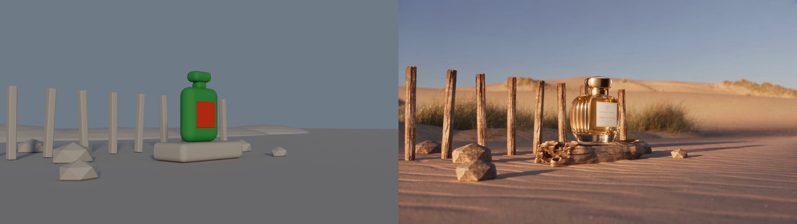
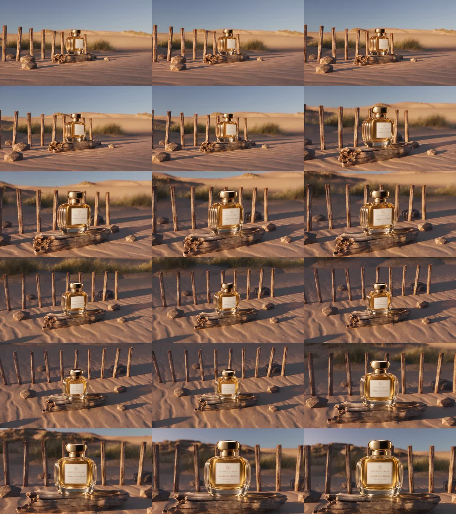

Public edition: account details, private identifiers and desktop screenshots have been removed. Project home and camera demonstration
1. What actually happened
The entire perfume workflow in two minutes
You described a luxury perfume advertisement and its four camera shots, then approved a new bottle image. Astra coordinated the project: it reconciled the brief, wrote local Blender Python and prepared the visual-generation instructions.
Blender executed that Python to build a simple 3D rehearsal set. Its animated cameras supplied the planned movement around a stationary bottle and scenery. Blender rendered 432 frames, and FFmpeg encoded an 18-second guide video.
The Higgsfield CLI uploaded the guide MP4, approved bottle PNG and text prompt to Seedance 2.5 Edit. Seedance interpreted the visible staging and movement while generating the detailed perfume, glass, gold, sand and wood. It received video pixels, not the .blend file or its camera coordinates.
The assistant checked a pilot, reviewed the full generation and requested a correction for an unwanted ocean strip. Local Python and FFmpeg then repaired timing, preserved four 4.5-second shots and added the final hold. The deliverable was a verified 18-second, 1080p, 24 fps MP4.
The mental picture is a chain of responsibilities: assistant as planner → Python as instructions → Blender as set and camera → CLI as courier → Seedance as visual generator → local tools as editor and inspector. Generation MCP supplied read-only preflight information. The Blender plugin/live bridge was available but not used for production. The saved .blend remains the editable rehearsal, not a photoreal reconstruction of the generated film.
A conversational assistant coordinated two very different image-making systems: Blender supplied a simple, measurable 3D camera guide; Seedance supplied the photorealistic video. Local software then repaired timing and verified the delivery.
This report reconstructs the completed run from local source code, saved prompts, model-job receipts, transaction records, frame metadata, QA results and the conversation. It is an execution report, not a promise that rerunning today's cloud model will produce identical pixels.
One correction to “the human never left Claude Code CLI”
The intended experience is accurately described as one conversational control surface: you issued instructions, approved the image and plan, and the assistant operated the other programs. However, the retained terminal transcript identifies Codex and GPT-6 Astra, not Claude Code. Browser authentication occurred during setup; Blender was opened later at your request. We should therefore say: the human did not need to manually operate the production handoffs, rather than claim that no browser or application ever opened.
Claude Code could coordinate the same file-and-command workflow if given equivalent shell, filesystem, image-inspection and authenticated Higgsfield access. That is an architectural explanation, not evidence that Claude executed this particular run. Likewise, “Astra” in the tutorial's Blender model menu must not be confused with proof that we submitted a job through that menu.
Tool-by-tool learning guide: mechanisms, manual use, roles and unknown unknowns
Outcome
- Product: ATELIER VESPER — AMBRE NOCTURNE, using your approved replacement reference image.
- Final: 18 seconds, 1920 × 1080, 24 fps, 432 decoded frames, H.264 MP4, silent.
- Four shots: hard cuts at 4.5, 9.0 and 13.5 seconds; final half-second held.
- Three Seedance 2.5 Edit jobs: pilot, full film and targeted horizon correction.
- Verified credit expenditure: 366.37; balance at the completion check: [account balance omitted] credits.
Evidence: final QA receipt, decoded metadata, delivery page. The raw retained CLI transcript was inspected but is intentionally not reproduced here because it contains authentication callback details.
2. The complete tool chain
Three distinct AI roles: GPT-6 Astra supplies reasoning and code orchestration; an image-generation model supplies the approved bottle reference; Seedance 2.5 supplies the generated video. Blender and FFmpeg perform rendering and media processing rather than these generative-model roles.
perfume_bottle.png. This image joins the rendered guide at the Higgsfield upload step below.Model provenance: Astra names the assistant identified in the retained CLI transcript; it does not mean we selected Astra inside the Blender plugin. The image tool's backend is deliberately unnamed because no retained receipt confirms ?Image 2.5? or another exact version. Seedance is explicitly verified by the three production receipts as seedance_2_5, mode video_edit.
Other image/video models: discussed alternatives, not executed stages
The installed skills and earlier catalog discussion mention image options such as GPT Image 2, Nano Banana and Soul, and video options such as Kling and other Seedance versions. These names belong in the wider tool map, but none is evidenced as an additional Higgsfield generation stage in this film. This is a historical account of options encountered, not a fresh availability or quality ranking. An alternative would occupy the image-reference or video-generation slot after its capabilities were checked; it would not automatically run alongside Seedance.
The arrows carry different things. The assistant-to-shell arrow carries commands. Python-to-Blender carries API calls inside a process. Blender-to-FFmpeg carries images on disk. CLI-to-Higgsfield carries uploads and structured job requests. Higgsfield-to-local delivery carries a result URL and then downloaded video bytes. None of these arrows automatically converts generated pixels back into Blender geometry.
Two optional branches that were not used for production
The first branch changes how commands reach local Blender. The second changes how generation requests reach Higgsfield. Neither is another video model, and neither was required by our chosen file-based production route.
3. Every component: responsibility and limits
| Component | What it actually did | What it did not do |
|---|---|---|
| Human | Specified the workflow; approved the new bottle and preflight recommendations; authorized execution; reviewed the result and opened the Blender file. | Did not manually model every object, upload each reference, or assemble the final timing. |
| Codex / conversational assistant | Interpreted the brief, authored Python and prompts, ran tools, examined visual outputs and receipts, diagnosed failures, coordinated corrections, wrote reports. | Did not directly rasterize the 432 Blender frames or synthesize the Seedance video with its text response. |
| GPT-6 Astra | The retained CLI transcript identifies this assistant model. The tutorial also names an Astra option in Blender Scene Builder; that separate selection was not invoked here. | No recorded Astra Scene Builder job through the Higgsfield plugin created this scene. Do not count the tutorial menu as an executed step. |
| Direct local Python | Two contexts: Blender’s embedded Python used bpy to create/inspect the scene; ordinary local Python handled JSON, downloads, encoding orchestration and QA. | A standalone ordinary Python interpreter was not itself the Blender renderer. The bpy scene script was run by the Blender executable. |
| PowerShell / shell execution tool | Started programs, passed arguments, piped prompts, redirected logs, inspected processes and files. The assistant used exec_command, with write_stdin for running-process output. | No creative video model resides in PowerShell. A successful process launch alone does not prove that its media output is correct. |
| Blender 5.2.1 LTS | Held meshes, materials, light, cameras, constraints and animation; saved .blend; evaluated the scene and rendered the guide. | Did not contain the final photoreal bottle, sand and driftwood seen in Seedance output. |
| Cycles + OptiX | Cycles rendered the guide; explicit OptiX device selection and denoising used the local GPU for this lightweight job. | Did not run Seedance locally. Local GPU memory was not the cloud model’s compute budget. |
| Higgsfield CLI: higgsfield | Installed via @higgsfield/cli; authenticated; queried account/models; uploaded assets; estimated credits; submitted and monitored cloud jobs. | Not the Codex CLI, not the Blender executable, and not the live scene bridge. |
| Higgsfield service | Accepted uploaded media, stored job parameters/status, charged credits, ran the selected generation service, returned downloadable results. | Did not receive the .blend source as an editable 3D world in this workflow. |
| Seedance 2.5 / seedance_2_5 / video_edit | Used guide-video pixels, bottle-reference pixels and text to synthesize the photoreal finish; also performed the horizon correction. | Did not guarantee exact camera transforms, object counts, text identity or frame timing. Those requests were soft guidance, not enforced scene constraints. |
| Higgsfield Blender plugin / live bridge | Installed plugin was inspected during setup; later screenshot shows its panel. It was not the route used to build or render production. | Presence of the plugin panel does not prove a connected bridge session or that its Generate button was used. |
| Higgsfield generation MCP | Used during read-only preflight for model inspection and a provisional estimate, according to the preflight record. | Did not submit the production jobs, and is not evidence of a connection to local Blender. |
| Built-in image-generation tool | Created the approved replacement bottle image earlier in the conversation. Its saved output became perfume_bottle.png. | No retained job receipt here establishes a precise backend version such as “Image 2.5”; this report does not invent one. |
| Other Higgsfield models | Catalog/skill documentation mentioned alternatives; production receipts consistently identify Seedance 2.5 Edit. | No evidence of Kling, Nano Banana, Soul, a 3D asset model, or an audio model contributing to this finished film. |
| Skills | Installed instruction packages, including higgsfield-generate, explained CLI conventions. They informed operations; actual user instructions and live schemas governed the chosen settings. | Skills are text instructions, not executables, model weights, authentication grants or proof a feature works. |
| FFmpeg / FFprobe | Encoded PNGs; inspected streams and decoded frame counts; detected cuts; encoded the final H.264 delivery. | Did not invent photoreal surfaces or repair label text. |
| OpenCV / NumPy | Decoded source frames and selected exact frame indices for per-shot timing normalization and the ending hold. | Did not use optical flow or generate intermediate frames. Timing changes can repeat or skip source frames. |
| Image viewer / HTML generator | view_image enabled assistant inspection of contact sheets and hero stills; local Python wrote linked HTML reports. | Viewing sampled stills is not proof of frame-by-frame visual perfection. HTML link validation is not browser rendering validation. |
“Direct local paty” is interpreted here as direct local Python, matching the terminology used in the earlier reports.
4. Setup and preflight: prove each boundary separately
4.1 Install the command-line client and skills
You requested the CLI installation, browser sign-in, and companion skills. The retained setup transcript and skill lock file support that this preparation occurred. These were setup actions before the three production video jobs.
npm i -g @higgsfield/cli
higgsfield auth login
npx skills add higgsfield-ai/skillsnpm installed the global command launcher. auth login initiated the browser authorization flow; the retained CLI help describes OAuth 2.0 PKCE. Browser consent and its local callback completed CLI authorization. Subsequent account queries established usable access. Authentication credentials were handled by the CLI; they were not written into the Blender scene or video prompts.
npx skills add installed eight instruction packages recorded in skills-lock.json (private working artifact; not distributed). The production-relevant package was higgsfield-generate. Installing all eight did not mean all eight were invoked. In particular, this run did not become a Marketing Studio or product-photoshoot workflow merely because those instructions existed.
4.2 Inspect the local Blender installation and plugin
The earlier inspection resolved the Blender executable, read the installed plugin manifest, and reported Blender 5.2.1 LTS and Higgsfield plugin 1.5.47. Those are recorded setup observations, not a new promise about future installed versions. The bridge source was read to understand its connection path and Python execution behavior.
A separate direct-Python smoke test launched a fresh background Blender process and printed its version, scene and default objects. It returned Cube, Light and Camera. This established that the assistant could operate Blender without a live bridge.
blender --background --factory-startup --python-expr "import bpy,json; print(json.dumps({'version':bpy.app.version_string,'scene':bpy.context.scene.name,'objects':[o.name for o in bpy.context.scene.objects]}))"This is a normalized equivalent of the recorded smoke test. --background avoids requiring an interactive viewport; --factory-startup establishes a clean starting scene; --python-expr runs Python inside Blender. The returned scene data proves direct execution, not remote bridge connectivity. The live bridge remained unverified at that stage.
4.3 Inspect the cloud model and account
The assistant inspected the model catalog and Seedance 2.5 schema using CLI and generation MCP capabilities. The preflight record documented a discrepancy: some documentation/skill guidance described a lower Edit-mode resolution limit, while the live schema accepted 1080p. Rather than assume the declaration guaranteed the output, production used a pilot and decoded its actual result.
Account access, model existence, valid input schema, accepted upload, successful generation and valid downloaded video are six different checks. A pass on one does not establish the others. The provisional 162-credit estimate lacked actual guide media; the later production quote used the uploaded 18-second guide and also returned 162 credits.
4.4 Resolve the contradictory brief before spending credits
The original first prompt demanded no water, while the second described ocean, surf and damp sand. The approved plan resolved this to a dry beach and dunes. The camera brief also asked each shot to finish front-on while preserving a continuous orbit; the implementation instead made the final shot settle front-on along one continuous counterclockwise azimuth progression.
The initial prompts remain historical inputs. The authoritative production rewrite is seedance-final-prompt.txt, together with the approved preflight recommendations. Blindly submitting the old PROMPT_2.txt again would reintroduce the ocean instruction.
The execution remained gated until you approved the recommendations and explicitly requested end-to-end execution. This report creates no further cloud jobs.
5. Freeze the approved product identity

You requested a new bottle in a similar premium amber-and-gold visual family, with a different name and shape. The image-generation tool produced the replacement, you approved it, and the original reference was removed.
The chosen image was copied into the workspace as perfume_bottle.png; the documents were updated to use the new identity. Its dimensions are 1122 × 1402, RGB. A SHA-256 recorded in the production media manifest ties the submitted identity to a specific local file.
Its important features are a broad flattened-oval clear-glass flask, rounded shoulders, subtly fluted side edges, thick base, amber liquid, short neck, rounded oval gold cap, ivory label, thin gold border and sunburst emblem.
The intended lettering is ATELIER VESPER / AMBRE NOCTURNE / EAU DE PARFUM / 75 ML. The image supplied appearance; it did not supply hidden-side measurements, a glass shader, a CAD model or a label texture mapped onto a Blender mesh.
A single front image leaves depth and unseen geometry underdetermined. We inferred a proxy depth for staging, and Seedance inferred a detailed appearance as the viewpoint changed. Therefore resemblance in the generated film should not be interpreted as recovery of a physically exact 3D bottle.
The image-generation step preceded the three logged Seedance jobs. The verified 366.37-credit total covers those three Higgsfield video transactions; it is not an all-provider accounting of the earlier image-generation tool.
6. Build the scene with direct Blender Python
Actor: assistant authors code. Tool: local file editing, PowerShell, Blender executable, embedded Python bpy. Input: approved plan and product proportions. Output: perfume-world.blend, previews and validation data.
The assistant wrote build_perfume_world.py. This is the concrete replacement for manually entering a Scene Builder prompt in the Higgsfield plugin. The script contains explicit object dimensions, materials, light placement, shot specifications, frame settings and checks.
6.1 Start from a controlled scene
The script selects and deletes existing objects in its working scene, then creates the intended objects. It is designed for a separately launched clean Blender process. Running this script inside an unrelated unsaved scene would delete that scene's objects; opening the delivered .blend is different from executing the build script.
It configures Cycles, eight samples, denoising, RGB PNG output, 1920 × 1080 at 100% resolution, 24 fps and frames 1–432. This deliberately lightweight render is sufficient for camera and staging guidance. It does not spend local render time on photoreal product materials that the next model will replace.
6.2 Construct actual, simple meshes
| Object | Construction in source | Purpose |
|---|---|---|
| Ground | 100 × 100 × 0.25 grey box, top close to z = 0 | Broad dry-ground guide; no water mesh. |
| Plinth | 1.6 × 0.85 × 0.32 bevelled box | Marks where driftwood should support the product. |
| Bottle body | 0.82 × 0.34 × 1.0 bevelled green box | Approximates the broad silhouette; not a glass/liquid simulation. |
| Neck and cap | Separate rounded green boxes; cap 0.44 × 0.29 × 0.20 | Rigidly stationary parts, not moving or unscrewing. |
| Front/back markers | Red front plate; black back plate; both 0.48 × 0.014 × 0.48 | Explicit orientation cues for the video model. |
| Posts | Ten slender boxes at y = 2.3, x spacing 0.72; small alternating tilts | Stable depth cues, silhouettes and parallax. |
| Rocks | Six low-subdivision scaled ico-spheres | Block stone positions and foreground/background depth. |
| Dune ridge | Seven overlapping flattened UV spheres near y = 12 | A low continuous horizon guide, not sculpted final sand. |
| Sun and world | Fixed warm Sun light; dim cool world background | Establish long shadows and warm/cool lighting contrast. |
| Target empty | Stationary point at (0, 0, 0.87) | Common camera look-at target. |
The scene uses stylized metre-valued coordinates. Its recorded product-height assumption is about 1.31 scene metres, which is not a claim that a 75 mL perfume bottle is physically that tall. Relative proportions and camera composition were the purpose; product manufacturing dimensions were not recovered.
6.3 Assign deliberately simple materials
The mat() helper creates node-based materials with Base Color and Roughness 0.85. Grey geometry remains matte. Green/red/black identify orientation. There is no final gold shader, refractive glass wall thickness, liquid meniscus, printed-label texture or photoreal wood shader in this file. Switching the viewport to rendered mode cannot reveal details that were never modelled.
6.4 Save the editable artifact before preview rendering
After successful checks, the script resets frame 1, selects the first camera and saves the .blend. Its non-animation branch renders eight 40%-resolution boundary previews. The production render is separately launched from the saved 100%-resolution file. This separation keeps the saved scene's full-resolution settings intact.
7. Camera choreography and numerical validation
Each camera uses a TRACK_TO constraint: negative local Z points toward the stationary target and local Y supplies the up axis. The script animates location rather than manually keyframing rotation. Changing position makes Blender evaluate the required aim automatically.
For normalized time t, the easing function is smooth(t) = t²(3 − 2t). Its endpoint slope is zero. Radius and height use this easing inside each shot; the global azimuth uses one smoothed progression from −135° to −90° through frame 420, then remains fixed. Increasing azimuth is counterclockwise when viewed from positive Z.
| Shot | Blender frames | Radius | Camera height | Lens | Intended movement |
|---|---|---|---|---|---|
| 1 | 1–108 | 7.8 → 6.8 | 0.65 → 0.80 | 38 mm | Low wide inward glide. |
| 2 | 109–216 | 5.5 → 4.9 | 1.05 → 1.75 | 42 mm | Closer rising arc. |
| 3 | 217–324 | 6.2 → 5.7 | 2.50 → 4.00 | 40 mm | Crane rise and downward view. |
| 4 | 325–432 | 4.8 → 3.9 | 2.05 → 1.02 | 42 mm | Descending push; settled position by frame 420. |
Camera markers at frames 1, 109, 217 and 325 bind the active camera at each cut. “Shot 4” being selected in the editor does not by itself mean shot 4 is currently rendering: object selection and the timeline's active camera are different concepts.
The checks run at every guide frame
- Product immobility: compare every product part's world matrix with its baseline. All 432 frames passed. The parts remain fixed individually; this is not a simulated rigid-body system.
- Framing: project the evaluated bounding-box corners into camera coordinates with
world_to_camera_view. Require positive depth and at least 5% normalized image-border clearance. The minimum observed border was 8.6275%. - Central sightline: ray-cast from camera to the target; flag an intervening non-product object. This tests the target ray, not every pixel of the bottle silhouette.
- Camera clearance: a second Blender script measured distance from each camera position to every mesh's world-axis-aligned bounding box. Required clearance was greater than 0.10; the minimum measured was approximately 0.655 scene metres.
- Visual previews: inspect frames around camera boundaries and the hero finish. The initial final push was too close; the camera endpoint was moved back before the full render.
What was not established: exact image-space velocity continuity across cuts. Matching orbit direction and easing is not a proof that projected objects move at identical speeds after changes in focal length, radius and height. The check script also evaluates discrete frames, not every instant between them. These limits remain explicit in the delivery evidence.
Evidence: per-frame camera data, validation summary, clearance implementation.
8. Render the guide and encode the handoff
8.1 Blender renders local pixels
The background Blender process loaded the saved scene and rendered all 432 PNGs. This used the local machine, whose preflight snapshot reported an RTX 3050 Laptop GPU with 4 GB VRAM. These are guide renders with simple geometry and eight Cycles samples, not locally generated Seedance frames.
An early render was slower than expected. Explicit OptiX device selection in the render process, GPU rendering, OptiX denoising and persistent render data resolved the practical performance issue. The slow attempt was interrupted and the full sequence was rendered consistently. The execution record describes the optimized full render as roughly seven minutes; that is an approximate observation, not a precisely instrumented benchmark.
The essential invocation was:
blender --background --factory-startup production/perfume-world.blend --python-exit-code 1 --python-expr "import bpy; s=bpy.context.scene; p=bpy.context.preferences.addons['cycles'].preferences; p.compute_device_type='OPTIX'; p.get_devices(); [(setattr(d,'use',d.type=='OPTIX')) for d in p.devices]; s.cycles.device='GPU'; s.cycles.denoiser='OPTIX'; s.render.use_persistent_data=True; s.render.filepath='//frames/frame_'" --render-animThis displayed command normalizes the original absolute output path to a Blender-relative path; it is explanatory and was not rerun while writing this report. The explicit Python exception exit code lets a script failure produce a failing process status.
8.2 Encode the master and the cut-containing pilot
encode_guides.py invokes FFmpeg with 24 fps input, libx264, CRF 18, yuv420p and fast-start MP4 metadata. The full frame sequence becomes blender-guide.mp4. The pilot uses original frames 49–168: 120 frames or 5 seconds, with a real shot cut 2.5 seconds into the excerpt.
python production/encode_guides.py --pilot
python production/encode_guides.pyThe script checks the written files with FFprobe, including decoded frame count, dimensions, frame rate and duration. The full guide is exactly 432 frames / 18 seconds, and the pilot is 120 frames / 5 seconds. Choosing a pilot that crosses a cut tests more than a single static shot: it tests whether the generation handoff can retain an edit boundary.
PNG files are an inspectable intermediate. If generation fails, the guide can be uploaded again without rerendering Blender. If encoding settings change, the same local images can be re-encoded. This is why separate artifacts made the workflow recoverable.
9. The CLI handoff: precisely what crossed the boundary
Local inputs: guide MP4, approved bottle PNG and revised text prompt. Uploaded representation: media records referenced by IDs. Cloud job: seedance_2_5, mode video_edit, requested 1080p, audio generation disabled.
The assistant uploaded the bottle once and reused its media ID for the pilot and full generation. It separately uploaded the short pilot and full guide. The correction later uploaded the first photoreal result, not the greybox guide. No .blend file, bpy source code, object coordinates, camera matrix array or geometry cache was submitted to Seedance.
The text describes video 1 as camera/timing/staging guidance and image 1 as bottle identity only. It explicitly excludes the dark studio background from the bottle reference. It translates the colored proxy to the new perfume bottle, the plinth to driftwood, the posts to timber, the ridge to dunes and the ground to dry sand.
Terms such as “exactly,” “stationary” and “preserve” in a generation prompt express desired constraints. They are not equivalent to Blender's fixed object transforms or a renderer's deterministic use of camera matrices. Seedance observes rendered evidence and synthesizes a plausible video; it can reinterpret it.
A normalized version of the executed full-generation pattern
Get-Content -Raw production/seedance-final-prompt.txt |
higgsfield generate create seedance_2_5 --mode video_edit `
--video <uploaded-guide-id> --image <uploaded-bottle-id> `
--resolution 1080p --generate_audio false `
--wait --wait-timeout 20m --json *> production/final-job.logThe angle-bracket values above are explanatory placeholders, not runnable arguments. Real IDs are in the local media manifest and receipt appendix. --wait kept the client waiting for completion; the assistant could also query generate get <job-id> --json while the long-running command remained active. A status query does not create another generation or another paid attempt.
The prompt pipeline supplies text through standard input. Logs retain structured job results. Returned data included a result URL; Python downloaded its bytes into a local MP4. The result was then decoded and inspected. A “completed” cloud status was necessary but insufficient for delivery.
Windows redirection produced UTF-16 in some logs, whereas other JSON files were UTF-8. Parsing was adjusted to detect a UTF-16 byte-order mark. This is a mundane but real interoperability boundary: a valid log can appear unparseable if decoded with the wrong encoding.
10. The three cloud jobs and the decisions between them
| Job | Created, local time | Credits | Native frames | Native duration | Detected native cuts |
|---|---|---|---|---|---|
| Pilot | 2026-09-10 22:37:47 PDT | 45 | 113 | 4.708333 s | 2.375 s |
| First full film | 2026-09-10 22:43:14 PDT | 162 | 425 | 17.708333 s | 4.458333 / 8.916667 / 13.291667 s |
| Dry-horizon correction | 2026-09-10 22:53:08 PDT | 159.37 | 425 | 17.708333 s | 4.5 / 8.916667 / 13.208333 s |
Creation times are taken from receipts, converted from UTC to America/Los_Angeles. They are job submission/creation timestamps, not exact render start or finish times. All three receipts report seedance_2_5, video_edit, 1080p, audio disabled and completed status.
10.1 Pilot: prove the selected mode with actual assets
The five-second cut-containing guide and bottle image were submitted for 45 credits. The downloaded video decoded as native 1920 × 1080, 24 fps HEVC. This resolved the practical 1080p uncertainty for this run: the output itself, not merely a settings menu, demonstrated it.
The model returned 113 frames, seven fewer than the requested guide's 120. The detected cut moved from 2.5 seconds to 2.375 seconds. Sampled frames showed a useful bottle replacement and the desired general environment; fine lettering was soft at a distance. The decision was to proceed with the full film while retaining a local timing-conform step.
10.2 Full film: evaluate the whole composition
The full 18-second guide and same bottle image were submitted for 162 credits. The result again contained 425 frames, seven short of 432. Its three cuts occurred at source-frame boundaries 107, 214 and 319. The full-resolution final hero frame showed readable product lettering and a premium glass/amber/gold appearance.
Closer review found an unwanted narrow ocean strip at the far-right horizon of the opening wide shot. The text had explicitly prohibited water, yet the model introduced it. This is direct evidence that a negative prompt is not an enforced mask or geometry constraint.
10.3 Targeted correction: change the background, preserve the successful film
The assistant retained the first full result and submitted that finished video as the correction input. The instruction requested only replacement of any distant water strip with dry golden dune terrain, while preserving bottle identity, label, posts, lighting, camera shots and duration. No reference image was attached to this correction; the existing photoreal video was the visual source.
The quote was 159.37 credits, based on the input's approximately 17.708333 seconds. It is numerically consistent with 9 credits per source second rounded to two decimals; this is an observation about these quotes, not a guarantee of future pricing. The cost was surfaced during execution before final delivery.
The corrected result still had 425 native frames and three cuts, now at frame boundaries 108, 214 and 317. Reviewed frames showed dry dunes across the horizon, and the detailed hero frame retained readable ATELIER VESPER / AMBRE NOCTURNE lettering. The correction was accepted for local finishing.
Although requested as a localized edit, the model was free to regenerate other pixels. The report therefore does not claim exact pixel preservation outside the horizon. Both native versions remain saved so that the correction and original can be compared.
Accounting
45 + 162 + 159.37 = 366.37 credits. The transaction history independently showed three corresponding spend entries. The account moved from the recorded [account balance omitted]-credit starting balance to [account balance omitted] at the completion check. These are credits, not a converted dollar cost; no unsupported credit-to-dollar exchange rate is assumed.
11. Local finishing: exact timing without another model call
The corrected native file was visually usable but 17.708333 seconds long. Padding seven frames at its end alone would not restore all three internal cut positions. Each shot therefore had to be conformed separately.
conform_final.py used OpenCV to decode frames and NumPy to choose source indices. Source frame numbering in this stage is zero-based; Blender's animation frame numbering is one-based. Mixing these conventions would shift cut boundaries.
| Shot | Corrected native frames, half-open interval | Native count | Final frame allocation |
|---|---|---|---|
| 1 | [0, 108) | 108 | 108 frames |
| 2 | [108, 214) | 106 | 108 frames |
| 3 | [214, 317) | 103 | 108 frames |
| 4 | [317, 425) | 108 | 96 resampled frames + 12 held frames |
For each of the first three shots, the script takes 108 evenly spaced positions from the first to last source frame, rounds to the nearest frame index and writes those frames. This leaves shot 1 effectively unchanged and repeats some frames in shots 2 and 3. For shot 4, it samples 96 positions across the entire source shot, then appends 12 copies of its final frame. This slightly compresses that shot's moving portion to make room for the ending hold.
Consequently the final source frame also appears at the end of the moving sample, immediately before the 12 appended copies. “Final half-second hold” describes the guaranteed last 12 frames; the terminal pose is already reached just before that interval.
This method does not invent intermediate motion, hallucinate reflections or alter label lettering. Its tradeoff is that repeated/skipped frames can make motion slightly less uniform. Optical flow could smooth temporal resampling but can also distort refractive glass and small text; it was not used.
python production/conform_final.py production/perfume-corrected-native.mp4 108,214,317The selected frames are streamed as raw 1920 × 1080 BGR images through a pipe into FFmpeg. FFmpeg encodes H.264 with CRF 18, yuv420p, 24 fps, no audio and fast-start MP4 metadata. The final delivery codec differs from the native HEVC result for compatibility. This re-encoding is lossy; it is not a byte-for-byte copy of the model output.
The script stores all 432 selected source-frame indices in timing-conform.json. This is an exact audit trail for the local timing transformation. The fixed result is 108 × 4 = 432 frames, giving 432 / 24 = 18 seconds and cuts at frames 108, 216 and 324, or 4.5, 9 and 13.5 seconds.
12. Verification: what passed, and what remains interpretive
The workflow used both numerical checks and visual judgment. They answer different questions and should not be substituted for each other.
| Check | Tool / implementation | Finding and boundary |
|---|---|---|
| All final frames decode | OpenCV loop in verify_delivery.py | 432 frames decoded, each 1920 × 1080. This catches missing/undecodable frames, not subtle visual flaws. |
| Stream and runtime | FFprobe with decoded frame counting | One video stream, H.264, 24/1 fps, 432 frames, 18 seconds; no audio stream. |
| Three cut times | FFmpeg select filter with scene score threshold 0.12 + showinfo; Python log parser | Detected 4.5 / 9.0 / 13.5 seconds. Threshold-based scene detection is a heuristic; here it agrees with the explicit frame map. |
| Final hold | Compare decoded last 12 frames to the final frame | Maximum mean absolute channel-value difference about 0.0634 on an 8-bit scale; below the asserted threshold of 1. Compression explains small differences despite repeated source frames. |
| Visual appearance | view_image on contact sheets and full-resolution hero stills | Dry dune horizon, bottle likeness and readable final label reviewed. Eighteen sampled frames plus detailed hero inspection, not visual certification of every pixel in all frames. |
| Product framing in Blender | Projection of evaluated product bounds | Minimum 8.6275% border; applies to the guide, not an automatic mathematical guarantee for the generated result. |
| Object consistency in generated video | Sampled visual assessment | Broadly usable appearance, but no metric proving exact camera azimuth, geometry, ten-post count or identity at every moment. |
| Delivery HTML | Local HTML parsing and relative-link existence checks | Referenced media and evidence files exist. Browser rendering was not verified because local report browsing was blocked in this session. |
| File identity | SHA-256 of final MP4 | Identifies the exact delivered bytes. A later re-encode will change the hash even if the pictures look similar. |
A log-parser check initially failed because PowerShell had written UTF-16. The parser was corrected to choose UTF-16 when the byte-order mark is present, otherwise UTF-8. It then found the expected cuts and all checks passed. This was an evidence-reading failure, not evidence of missing video cuts.
The run also encountered a non-existent generate status CLI subcommand while checking progress; the documented generate get route was used instead. No extra generation was created by that help response. Small operational errors are included here to show that tool orchestration includes inspection and recovery, not just one flawless command.
The final QA record explicitly states that the generated film approximates the guide. If the requirement changes to physically exact camera/object motion or legally exact brand typography in every frame, the present sampled visual checks are not sufficient.
13. Understand the Blender screenshot and compare the media

The screenshot shows the entire set from an editor perspective, not the active camera's composed image. The wireframe pyramids are camera helpers, the grey spheres form the dune guide, and the green bottle/red front are orientation markers. The plugin panel overlays the viewport; it is not part of the rendered scene.
There are thus two independent differences: editor view versus camera view, and greybox materials versus generated photoreal appearance. Looking through the camera resolves the first. It cannot resolve the second, because the detailed final surfaces were generated later by Seedance.
The comparison controls align playback start/seek time; browser playback is not a frame-locked scientific comparison. Each video also has ordinary native controls. This report loads videos from the adjacent production folder and makes no generation request.

What would be required for the Blender file itself to look like the final film? Detailed bottle geometry with glass and liquid surfaces; mapped label artwork; calibrated metal/glass shaders; realistic wood, sand and vegetation; lighting and render tuning; and more expensive local rendering. That is a different production deliverable. The current file is intentionally a camera-and-layout guide, not a reverse-engineered photoreal scene.
14. Where the live bridge, plugin and Astra would fit
The tutorial route
Your notes describe opening Blender's Higgsfield Scene Builder, selecting GPT-6 Astra and submitting the scene prompt there. They also describe connecting an external assistant to a Higgsfield bridge MCP endpoint so it can work with the running Blender scene. These are routes discussed in the source notes, not an execution log proving we used them.
The installed bridge mechanism, as inspected earlier
The earlier local source inspection found that the plugin starts an outbound bridge connection, receives commands, executes Python in Blender and returns results. In that architecture, the assistant can operate on the scene the human is already viewing. The bridge carries requests and responses; Blender remains responsible for applying scene operations and rendering.
For example, an assistant could request “move the selected post back one metre,” receive scene information, send Python through the bridge, then inspect the resulting state. This can preserve an interactive session's current context. It requires a connected, authorized bridge and a running Blender instance; the plugin's installed files alone do not establish those conditions.
The route actually used
We created a reproducible script and launched Blender directly. That avoided needing to maintain a live plugin session for a fresh batch-built scene. When you later asked to see the file, PowerShell used Start-Process to open the .blend in Blender. A process/window-title check confirmed the named scene had opened. This was local process launching, not a bridge call.
| Choose this route when… | Direct Python / Blender executable | Live bridge / plugin |
|---|---|---|
| Building a new scene from a known specification | Strong fit: code and inputs are saved; render in the background. | Possible, but adds connection/session state that this batch did not require. |
| Editing a human’s currently open, partly unsaved scene | Possible only with deliberate session/file handling. | Potentially useful: works in the interactive context when connected. |
| Reproducing the same guide repeatedly | Saved script and .blend make the input explicit. | Record generated scripts and state carefully; conversation alone may not be enough. |
| Uploading a rendered MP4 to Seedance | Use Higgsfield CLI or generation MCP after rendering. | The bridge is not required; do not assume it is the upload path. |
| Obtaining final photoreal editable geometry | Requires modelling/material work or a separate asset pipeline. | Using a bridge does not convert Seedance video back into 3D geometry. |
The bridge and direct Python are alternative control paths to Blender. The CLI and generation MCP are alternative control paths to Higgsfield's generation service. Astra and Seedance occupy different model roles: assistant/code reasoning versus video synthesis. Treating all four as interchangeable “AI tools” hides the most important distinction in the workflow.
15. How one conversation orchestrated many programs
The human-facing CLI is an interface to an agent with tools. It is not an isolated text box that magically turns prose into an MP4. Behind each conversational update, the assistant performed a concrete action, received observable output and chose its next action.
| Assistant action | Tool surface | Returned evidence |
|---|---|---|
| Read the brief, code and manifests | exec_command running PowerShell, rg, Get-Content or Python | Text, paths, schemas and settings. |
| Create/change scripts and reports | apply_patch and local Python file writing | Durable files in the workspace. |
| Start Blender rendering or cloud submission | exec_command; long commands returned process/session handles | Exit status, logs, background progress. |
| Monitor running work | write_stdin for process output; higgsfield generate get for a known job | Local process completion or remote job state. |
| Inspect visual outputs | view_image on saved screenshots/contact sheets/hero frames | Images visible to the assistant for judgment. |
| Create the approved bottle reference earlier | Built-in image-generation tool | Generated PNG, later copied to the workspace. |
| Perform browser sign-in earlier | Browser automation surface during auth flow | Authorization completion, followed by CLI account verification. |
| Finish and verify video | Python subprocess calls to FFmpeg/FFprobe plus OpenCV/NumPy | MP4, stream metadata, exact frame map and assertions. |
| Open Blender on request | PowerShell Start-Process and process/window-title inspection | Interactive Blender window showing the named file. |
This is an observe–act–check loop. The assistant's reasoning links tools together; files and receipts carry state between them. A cloud job may take minutes while a local render has already finished. The assistant retains a job identifier, polls that job rather than resubmitting it, and continues only when the output can be downloaded and examined.
The human approved creative intent and expenditure through the conversation, while the agent handled repetitive mechanics. That is the transferable lesson for Claude Code as well as Codex: the unified experience comes from orchestration, not from every computation running in the CLI process.
Where computation happened
- Local machine: Blender scene evaluation and Cycles guide rendering; Python scripts; MP4 encoding; file storage; local QA.
- Remote model services: assistant reasoning/image-generation capability and Higgsfield's Seedance jobs. The exact infrastructure inside those services is not exposed by the saved receipts.
- Across the network: authentication, model/account queries, uploaded reference media, job requests/status, downloaded result video.
The report does not assume that uploaded files remain only on the local machine, nor does it make unsupported claims about provider retention. The concrete fact is that the guide video and product image were uploaded to the generation service. The saved .blend and build script were not the model inputs.
16. What this run teaches—and what to improve next time
Geometry becomes guidance when converted to pixels
In Blender, the camera and object transforms are exact state. Once rendered into an MP4 and supplied to Seedance, that state becomes visual evidence. The generative model can infer layout and motion, but the input is no longer an enforceable scene graph. This explains both the useful transfer of camera structure and the deviations in timing, background and potentially object details.
Separate deterministic control from generative appearance
The strongest parts of this run were explicit local artifacts: 432 source frames, fixed guide transforms, saved camera paths, exact per-shot frame allocation and decoded output checks. The uncertain part was the photoreal interpretation. The successful strategy was to measure the deterministic parts and visually review the generated part rather than claim one kind of evidence proved everything.
A pilot saved uncertainty, not all risk
The pilot verified actual 1080p Edit output and exposed timing shortening. It did not guarantee that the full film would avoid an ocean strip. Tests should target specific risks; passing one test does not certify other behavior that the tested excerpt did not exercise.
Make the delivery expectation explicit before building
The biggest communication failure was not making “editable guide scene” versus “photoreal editable scene” prominent enough. A future brief should state both deliverables separately. If you need editable geometry matching the final film, a greybox-to-video workflow alone is insufficient.
For stronger brand and camera fidelity
Build and render the actual bottle and label in Blender, or retain a deterministic product render and use generated imagery more selectively for environment/style work. That requires more modelling/compositing effort but preserves geometry and lettering. It is an improvement proposal, not something secretly performed during this run.
For better repeatability
Archive the exact uploaded media, submitted prompts, returned job parameters, native result, timing map and final hash—as this run largely does. A rerun of the local scene can reproduce the same specification. A rerun of an evolving remote generative service is not guaranteed to reproduce identical pixels, even with the same prompt.
For clearer review
Review guide and generated output side by side at each cut and during the final hero pose. Distinguish exact checks from sampled judgment. Keep the first acceptable native generation before requesting corrections, because a targeted generative edit can disturb already-successful regions.
17. Evidence inventory and provenance boundaries
| Local artifact | What it proves or contains |
|---|---|
| perfume_bottle.png | Approved product identity; 2D image |
| PROMPT_1.txt (private working artifact; not distributed) | Historical scene brief |
| PROMPT_2.txt (private working artifact; not distributed) | Historical style brief; contains superseded ocean wording |
| perfume-video-preflight.html | Approved plan and earlier evidence snapshot |
| blender-python-vs-higgsfield-bridge.html | Earlier architecture comparison |
| build_perfume_world.py | Actual scene construction and validation source |
| production/perfume-world.blend | Editable greybox scene |
| production/blender-guide.mp4 | Actual 18-second handoff guide |
| production/blender-pilot.mp4 (private working artifact; not distributed) | Five-second cut-containing excerpt |
| production/seedance-final-prompt.txt | Production prompt rewrite |
| production/seedance-pilot-prompt.txt | Pilot prompt |
| production/pilot-result.mp4 (private working artifact; not distributed) | Native pilot output |
| production/perfume-native.mp4 (private working artifact; not distributed) | First full result, including unwanted distant ocean |
| production/perfume-corrected-native.mp4 (private working artifact; not distributed) | Corrected native result before timing finish |
| production/perfume-final.mp4 | Final 18-second delivery |
| production/camera-validation.json | 432-frame guide projection and camera data |
| production/blender-validation-summary.json | Guide checks and limits |
| production/timing-conform.json | Exact source index for each final frame |
| production/final.metadata.json | FFprobe metadata for final MP4 |
| production/final-qa.json | Final technical and visual assessment |
| production/verify_delivery.py (private working artifact; not distributed) | Runnable decode/cut/hold checks |
| production/index.html | Compact delivery report |
{kind=link}
The production/frames/ folder contains frame_0001.png through frame_0432.png. Production also retains logs, receipts, native contact sheets, detailed hero stills and scripts. Raw account records and authentication transcripts are not embedded in this report. The sanitized job appendix below keeps operational parameters and IDs while omitting account-specific media URLs.
Evidence hierarchy: source code establishes implemented behavior; decoded media establishes what was written; job receipts establish submitted/returned job state; transaction entries establish credits spent; sampled images support visual observations; earlier reports and conversation establish decisions. A previous plan does not override contradictory output evidence.
This HTML is a local, offline-readable report. Its text, styling and comparison controls are contained here; videos, images and source links use adjacent workspace files. Keep the directory structure when moving it. It is not a privacy-scrubbed public export of the entire workspace.
18. Exact scripts, prompts and sanitized job receipts
These appendices expose the exact local implementation and submitted prompts without requiring you to read every line in the narrative. Long code blocks are collapsed initially. Commands shown earlier are normalized explanations; the saved source below is the concrete implementation.
build_perfume_world.py
"""Approved perfume previz. Run with Blender; --render renders all frames."""
import bpy, math, json, sys
from pathlib import Path
from mathutils import Vector
from bpy_extras.object_utils import world_to_camera_view
ROOT=Path(__file__).resolve().parent
OUT=ROOT/'production'
OUT.mkdir(exist_ok=True)
(OUT/'frames').mkdir(exist_ok=True)
bpy.ops.object.select_all(action="SELECT")
bpy.ops.object.delete(use_global=False)
s=bpy.context.scene
s.render.engine='CYCLES'
s.cycles.samples=8
s.cycles.use_denoising=True
s.cycles.denoiser='OPTIX'
s.render.use_persistent_data=True
s.render.resolution_x=1920; s.render.resolution_y=1080
s.render.resolution_percentage=100
s.render.fps=24; s.frame_start=1; s.frame_end=432
s.render.image_settings.file_format='PNG'; s.render.image_settings.color_mode='RGB'
s.world=bpy.data.worlds.new('Cool sky')
s.world.use_nodes=True
s.world.node_tree.nodes['Background'].inputs[0].default_value=(.36,.43,.55,1)
s.world.node_tree.nodes['Background'].inputs[1].default_value=.45
try:
prefs=bpy.context.preferences.addons['cycles'].preferences
prefs.compute_device_type='OPTIX'; prefs.get_devices()
for d in prefs.devices: d.use=d.type=='OPTIX'
if any(d.use for d in prefs.devices): s.cycles.device='GPU'
except Exception: pass
def mat(name,color):
m=bpy.data.materials.new(name); m.diffuse_color=(*color,1); m.use_nodes=True
bs=m.node_tree.nodes.get('Principled BSDF'); bs.inputs['Base Color'].default_value=(*color,1); bs.inputs['Roughness'].default_value=.85
return m
grey=mat('Matte grey',(.43,.43,.43)); red=mat('Front label red',(.65,.018,.012)); green=mat('Sides green',(.025,.32,.065)); black=mat('Back black',(.015,.015,.015))
def cube(name,loc,scale,material=grey,bevel=0):
bpy.ops.mesh.primitive_cube_add(size=1,location=loc); o=bpy.context.object; o.name=name; o.dimensions=scale
bpy.ops.object.transform_apply(location=False,rotation=False,scale=True)
o.data.materials.append(material)
if bevel:
mod=o.modifiers.new('Rounded edges','BEVEL'); mod.width=bevel; mod.segments=4
o.modifiers.new('Weighted normals','WEIGHTED_NORMAL')
return o
cube('Dry sand',(0,0,-.13),(100,100,.25))
cube('Driftwood plinth',(0,0,.16),(1.6,.85,.32),bevel=.10)
body=cube('Bottle body',(0,0,.82),(.82,.34,1.0),green,.16)
neck=cube('Bottle neck',(0,0,1.36),(.23,.20,.15),green,.06)
cap=cube('Oval gold-cap proxy',(0,0,1.52),(.44,.29,.20),green,.09)
front=cube('Front red label',(0,-.176,.82),(.48,.014,.48),red,.012)
back=cube('Black back',(0,.176,.82),(.48,.014,.48),black,.012)
product=[body,neck,cap,front,back]
for i in range(10):
o=cube(f'Timber post {i+1:02}',((i-4.5)*.72,2.3,.67),(.14,.16,1.34),bevel=.025)
o.rotation_euler[1]=math.radians((i%3-1)*3)
for i,(x,y,z) in enumerate([(-2,1,.22),(2.2,.8,.18),(-3,-1,.15),(3,3,.32),(-1.4,4,.2),(1.7,-.6,.12)]):
bpy.ops.mesh.primitive_ico_sphere_add(subdivisions=1,radius=1,location=(x,y,z*.55)); o=bpy.context.object; o.name=f'Rock {i+1}'; o.scale=(z*1.8,z*1.3,z); o.data.materials.append(grey)
for i in range(7):
bpy.ops.mesh.primitive_uv_sphere_add(segments=24,ring_count=12,location=((i-3)*6,12+math.sin(i)*1.2,-.35))
o=bpy.context.object; o.name=f'Dune ridge {i}'; o.scale=(5,2.4,1.0+.2*math.sin(i)); o.data.materials.append(grey)
bpy.ops.object.light_add(type='SUN',location=(-8,-6,5)); sun=bpy.context.object; sun.name='Fixed golden-hour sun'
sun.rotation_euler=Vector((5,7,-2)).to_track_quat('-Z','Y').to_euler(); sun.data.energy=2.1; sun.data.angle=.10; sun.data.color=(1,.78,.52)
bpy.ops.object.empty_add(location=(0,0,.87)); target=bpy.context.object; target.name='Stationary camera target'
def smooth(t): return t*t*(3-2*t)
def azimuth(f):
t=min(1,max(0,(f-1)/419))
return math.radians(-135+45*smooth(t))
shots=[(1,108,7.8,6.8,.65,.80,38),(109,216,5.5,4.9,1.05,1.75,42),(217,324,6.2,5.7,2.5,4.0,40),(325,432,4.8,3.9,2.05,1.02,42)]
cameras=[]
for n,(start,end,r0,r1,z0,z1,lens) in enumerate(shots,1):
bpy.ops.object.camera_add(); c=bpy.context.object; c.name=f'Shot {n}'; c.data.lens=lens; c.data.clip_start=.05; c.data.clip_end=200
con=c.constraints.new('TRACK_TO'); con.target=target; con.track_axis='TRACK_NEGATIVE_Z'; con.up_axis='UP_Y'
for f in range(start,end+1):
t=(f-start)/((420 if n==4 else end)-start); t=min(1,t); u=smooth(t)
a=azimuth(f); radius=r0+(r1-r0)*u
c.location=(radius*math.cos(a),radius*math.sin(a),z0+(z1-z0)*u)
c.keyframe_insert(data_path='location',frame=f)
marker=s.timeline_markers.new(c.name,frame=start); marker.camera=c; cameras.append(c)
s.camera=cameras[0]
baseline={o.name:[list(row) for row in o.matrix_world] for o in product}
checks=[]; errors=[]
for f in range(1,433):
s.frame_set(f); c=cameras[min((f-1)//108,3)]; s.camera=c
deps=bpy.context.evaluated_depsgraph_get()
bounds=[]
for o in product:
eo=o.evaluated_get(deps)
assert [list(row) for row in o.matrix_world]==baseline[o.name],o.name
bounds += [world_to_camera_view(s,c,eo.matrix_world@Vector(v)) for v in eo.bound_box]
margin=min(min(v.x,1-v.x,v.y,1-v.y) for v in bounds)
if margin<.05 or min(v.z for v in bounds)<=0: errors.append({'frame':f,'margin':margin})
# Exact ray cast from camera to target detects intervening geometry.
direction=target.location-c.location
hit,loc,normal,face,obj,matrix=s.ray_cast(deps,c.location,direction.normalized(),distance=direction.length)
if hit and obj.name not in [o.name for o in product]: errors.append({'frame':f,'occluder':obj.name})
checks.append({'frame':f,'shot':c.name,'azimuth_deg':math.degrees(azimuth(f)),'margin':margin,'camera':list(c.location)})
(OUT/'camera-validation.json').write_text(json.dumps({'errors':errors,'frames':checks,'assumptions':'Bottle height 1.31 scene metres including cap; stylized product scale. Depth .34 inferred from a single front view.','engine':s.render.engine,'device':s.cycles.device},indent=2))
assert not errors,errors[:8]
s.frame_set(1); s.camera=cameras[0]
bpy.ops.wm.save_as_mainfile(filepath=str(OUT/'perfume-world.blend'))
if '--render' in sys.argv:
s.render.filepath=str(OUT/'frames'/'frame_'); bpy.ops.render.render(animation=True)
else:
for f in [1,108,109,216,217,324,325,420]:
s.frame_set(f); s.camera=cameras[min((f-1)//108,3)]; s.render.resolution_percentage=40
s.render.filepath=str(OUT/f'preview-{f:03}.png'); bpy.ops.render.render(write_still=True)
print('VALIDATED 432 FRAMES')production/check_camera_clearance.py
import bpy, json
from pathlib import Path
from mathutils import Vector
p=Path(__file__).resolve().parent
s=bpy.context.scene
boxes=[]
for o in s.objects:
if o.type!='MESH': continue
eo=o.evaluated_get(bpy.context.evaluated_depsgraph_get())
points=[eo.matrix_world@Vector(v) for v in eo.bound_box]
boxes.append((o.name,[min(v[i] for v in points) for i in range(3)],[max(v[i] for v in points) for i in range(3)]))
minimum=1e9
for f in range(1,433):
s.frame_set(f); c=bpy.data.objects[f'Shot {min((f-1)//108,3)+1}']
for name,lo,hi in boxes:
distance=sum(max(lo[i]-c.location[i],0,c.location[i]-hi[i])**2 for i in range(3))**.5
assert distance>.10,(f,name,distance)
minimum=min(minimum,distance)
x=json.loads((p/'blender-validation-summary.json').read_text())
x['minimum_camera_to_object_aabb_clearance']=minimum
x['validation_limits']='All 432 camera positions are at least 0.10 scene metres outside every mesh world AABB. Product bounds, fixed transforms and sightline checks passed. Exact screen-space velocity matching is not numerically certified.'
(p/'blender-validation-summary.json').write_text(json.dumps(x,indent=2))
print('CAMERA CLEARANCE PASS',minimum)production/encode_guides.py
"""Encode a completed PNG range; validate decoded frame count and duration."""
import json, subprocess, sys, time
from pathlib import Path
root=Path(__file__).resolve().parent
pilot='--pilot' in sys.argv
start,count=(49,120) if pilot else (1,432)
output=root/('blender-pilot.mp4' if pilot else 'blender-guide.mp4')
deadline=time.monotonic()+1200
last=root/'frames'/f'frame_{start+count-1:04}.png'
while not last.exists():
if time.monotonic()>deadline: raise TimeoutError(str(last))
time.sleep(3)
time.sleep(2)
subprocess.run(['ffmpeg','-hide_banner','-loglevel','error','-y','-framerate','24','-start_number',str(start),'-i',str(root/'frames'/'frame_%04d.png'),'-frames:v',str(count),'-c:v','libx264','-crf','18','-pix_fmt','yuv420p','-movflags','+faststart',str(output)],check=True)
raw=subprocess.check_output(['ffprobe','-v','error','-count_frames','-show_entries','stream=codec_name,width,height,r_frame_rate,nb_read_frames:format=duration','-of','json',str(output)])
data=json.loads(raw); stream=data['streams'][0]
assert int(stream['nb_read_frames'])==count
assert stream['width']==1920 and stream['height']==1080 and stream['r_frame_rate']=='24/1'
assert abs(float(data['format']['duration'])-count/24)<.001
output.with_suffix('.metadata.json').write_text(json.dumps(data,indent=2))
print('VALIDATED',output.name,count,'frames',count/24,'seconds',flush=True)production/conform_final.py
"""Conform four reviewed native shots to 108 frames each, with a final 12-frame hold."""
import json, subprocess, sys
from pathlib import Path
import cv2
import numpy as np
root=Path(__file__).resolve().parent
source=Path(sys.argv[1])
cuts=[int(x) for x in sys.argv[2].split(',')]
cap=cv2.VideoCapture(str(source))
count=int(cap.get(cv2.CAP_PROP_FRAME_COUNT))
bounds=[0,*cuts,count]
assert len(bounds)==5 and all(a<b for a,b in zip(bounds,bounds[1:]))
indices=[]
for shot,(a,b) in enumerate(zip(bounds,bounds[1:])):
moving=96 if shot==3 else 108
indices.extend(np.rint(np.linspace(a,b-1,moving)).astype(int).tolist())
if shot==3: indices.extend([b-1]*12)
assert len(indices)==432 and indices[-12:]==[count-1]*12
out=root/'perfume-final.mp4'
cmd=['ffmpeg','-hide_banner','-loglevel','error','-y','-f','rawvideo','-pixel_format','bgr24','-video_size','1920x1080','-framerate','24','-i','pipe:0','-an','-c:v','libx264','-crf','18','-pix_fmt','yuv420p','-movflags','+faststart',str(out)]
proc=subprocess.Popen(cmd,stdin=subprocess.PIPE)
cursor=-1
for index in indices:
while cursor<index:
ok,frame=cap.read()
assert ok, f'Cannot decode frame {cursor+1}'
cursor+=1
assert frame.shape==(1080,1920,3)
proc.stdin.write(frame.tobytes())
proc.stdin.close(); assert proc.wait()==0
cap.release()
metadata=json.loads(subprocess.check_output(['ffprobe','-v','error','-count_frames','-show_streams','-show_format','-of','json',str(out)]))
s=metadata['streams']; assert len(s)==1
assert s[0]['codec_name']=='h264' and s[0]['nb_read_frames']=='432' and s[0]['r_frame_rate']=='24/1'
assert abs(float(metadata['format']['duration'])-18)<.001
(root/'final.metadata.json').write_text(json.dumps(metadata,indent=2))
(root/'timing-conform.json').write_text(json.dumps({'source':source.name,'source_frames':count,'source_shot_boundaries_zero_based':bounds,'output_cut_seconds':[4.5,9,13.5],'output_frames':432,'final_hold_frames':12,'method':'Nearest-frame per-shot resampling; no optical-flow synthesis. Last source frame held for final 12 frames.','source_frame_for_each_output':indices},indent=2))
print('Validated 432 frames, 18 seconds, 1080p24 H264, silent.')production/verify_delivery.py
"""Decode the final film, verify timing, and write the delivery QA receipt."""
from pathlib import Path
import cv2, hashlib, json, re
import numpy as np
root=Path(__file__).resolve().parent
raw=(root/'final-cuts.log').read_bytes()
log=raw.decode('utf-16' if raw.startswith(b'\xff\xfe') else 'utf-8-sig')
cuts=[float(x) for x in re.findall(r'pts_time:([\d.]+)',log)]
assert cuts==[4.5,9.0,13.5], cuts
cap=cv2.VideoCapture(str(root/'perfume-final.mp4'))
n=0; hold=[]
while True:
ok,frame=cap.read()
if not ok: break
assert frame.shape==(1080,1920,3)
if n>=420: hold.append(frame)
n+=1
cap.release()
assert n==432 and len(hold)==12
hold_difference=max(float(np.abs(f.astype(np.int16)-hold[-1].astype(np.int16)).mean()) for f in hold)
assert hold_difference<1,hold_difference
qa={
'assessment':'Completed Blender-to-Seedance 2.5 workflow. Sampled visual review found the approved amber-glass bottle, gold cap and ivory label in a dry dune setting, with four camera shots and a readable final hero label. A second edit removed an unwanted distant ocean strip. The generated film approximates the guide: it does not certify exact 3D geometry, camera azimuth, object count or pixel-perfect identity across every frame. Fine text is softer in distant shots. The editable Blender file contains the greybox guide, not the photoreal generated world.',
'format':'1920 x 1080, 24 fps, H.264 MP4, silent',
'duration_seconds':18,
'decoded_frames':n,
'verified_cut_seconds':cuts,
'final_hold_seconds':0.5,
'hold_mean_absolute_pixel_difference_max':hold_difference,
'timing_finish':'Native result: 425 frames / 17.708333 seconds. Each shot resampled to 108 frames; final 12 frames hold the final source frame. Nearest-frame sampling, without optical-flow synthesis.',
'production_route':'Local Blender Python -> rendered guide MP4 -> Higgsfield CLI -> Seedance 2.5 Edit -> local FFmpeg finishing. The Blender live bridge was unnecessary for this batch-rendered scene; generation MCP was not needed for production.',
'credits_spent':366.37,
'credits_breakdown':'Pilot 45; full generation 162; horizon correction 159.37. Confirmed against Higgsfield transactions.',
'remaining_credits_at_check':[account balance omitted],
'visual_review':'18 sampled frames plus full-resolution final hero; technical checks decode all 432 frames. Browser rendering of the HTML report was not verified.',
'sha256':hashlib.sha256((root/'perfume-final.mp4').read_bytes()).hexdigest()
}
(root/'final-qa.json').write_text(json.dumps(qa,indent=2))
print('PASS: all frames decoded, three exact cuts, final hold, QA receipt saved.')production/seedance-pilot-prompt.txt
Video 1 is the camera, timing and staging reference. Image 1 is the approved perfume bottle identity reference only, NOT its dark studio background. Restyle the video as a luxurious photoreal perfume advertisement. Preserve the source camera motion, framing, hard-cut timing and world-space staging as closely as possible.
Replace the colored proxy bottle with ATELIER VESPER - AMBRE NOCTURNE from Image 1: sculpted flattened-oval clear glass, rounded shoulders, subtly fluted side edges, thick clear base, amber liquid, short neck and rounded oval metallic gold cap. Match its proportions and ivory label, fine gold border and sunburst emblem. Label text: ATELIER VESPER / AMBRE NOCTURNE / EAU DE PARFUM / 75 ML. The proxy's red face denotes the label front; remove every red, green and black orientation-marker color. No carton, no second bottle, no new logo or text.
The bottle is absolutely stationary relative to its plinth: no spinning, floating, wobbling, deformation or cap movement. Only camera perspective and reflections change. Keep the full bottle in frame.
The low support becomes weathered driftwood. The ten tall thin posts become weathered timber posts at the same positions, maintaining their parallax. Grey rock proxies become dry stones. The ridge becomes dry dunes with restrained marram grass. Ground becomes dry rippled beach sand with subtle footprints. Only sky beyond the dune. NO ocean, surf, waves, water, wet sand or wet reflections anywhere. No added people or props.
Preserve fixed world-space light direction and long shadows from the guide. Warm late-golden-hour sunlight, cool sky fill, realistic glass reflections and contact shadows. Photoreal luxury product cinematography, moderate depth of field keeping the posts readable, natural motion blur, restrained film grain and warm grade.
This is a 5-second pilot excerpt. Preserve its two camera shots and the hard cut at 2.5 seconds: low wide glide followed by a closer rising arc. No additional cuts, dissolves, speed ramps or invented camera moves. Silent video.production/seedance-final-prompt.txt
Video 1 is the camera, timing and staging reference. Image 1 is the approved perfume bottle identity reference only, NOT its dark studio background. Restyle the video as a luxurious photoreal perfume advertisement. Preserve the source camera motion, framing, hard-cut timing and world-space staging as closely as possible.
Replace the colored proxy bottle with ATELIER VESPER - AMBRE NOCTURNE from Image 1: sculpted flattened-oval clear glass, rounded shoulders, subtly fluted side edges, thick clear base, amber liquid, short neck and rounded oval metallic gold cap. Match its proportions and ivory label, fine gold border and sunburst emblem. Label text: ATELIER VESPER / AMBRE NOCTURNE / EAU DE PARFUM / 75 ML. The proxy's red face denotes the label front; remove every red, green and black orientation-marker color. No carton, no second bottle, no new logo or text.
The bottle is absolutely stationary relative to its plinth: no spinning, floating, wobbling, deformation or cap movement. Only camera perspective and reflections change. Keep the full bottle in frame.
The low support becomes weathered driftwood. The ten tall thin posts become weathered timber posts at the same positions, maintaining their parallax. Grey rock proxies become dry stones. The ridge becomes dry dunes with restrained marram grass. Ground becomes dry rippled beach sand with subtle footprints. Only sky beyond the dune. NO ocean, surf, waves, water, wet sand or wet reflections anywhere. No added people or props.
Preserve fixed world-space light direction and long shadows from the guide. Warm late-golden-hour sunlight, cool sky fill, realistic glass reflections and contact shadows. Photoreal luxury product cinematography, moderate depth of field keeping the posts readable, natural motion blur, restrained film grain and warm grade.
Keep four shots with hard cuts at 4.5, 9.0 and 13.5 seconds: low wide glide, rising closer arc, crane rise, descending final push-in. No additional cuts, dissolves, speed ramps or invented camera moves. Preserve the final half-second settled camera hold. Silent video.Private cloud-job receipts are omitted from this public edition; the execution narrative retains the relevant settings and outcomes.
Private cloud-job receipts are omitted from this public edition; the execution narrative retains the relevant settings and outcomes.
Private cloud-job receipts are omitted from this public edition; the execution narrative retains the relevant settings and outcomes.
Final QA receipt
{
"assessment": "Completed Blender-to-Seedance 2.5 workflow. Sampled visual review found the approved amber-glass bottle, gold cap and ivory label in a dry dune setting, with four camera shots and a readable final hero label. A second edit removed an unwanted distant ocean strip. The generated film approximates the guide: it does not certify exact 3D geometry, camera azimuth, object count or pixel-perfect identity across every frame. Fine text is softer in distant shots. The editable Blender file contains the greybox guide, not the photoreal generated world.",
"format": "1920 x 1080, 24 fps, H.264 MP4, silent",
"duration_seconds": 18,
"decoded_frames": 432,
"verified_cut_seconds": [
4.5,
9.0,
13.5
],
"final_hold_seconds": 0.5,
"hold_mean_absolute_pixel_difference_max": 0.06335824974279836,
"timing_finish": "Native result: 425 frames / 17.708333 seconds. Each shot resampled to 108 frames; final 12 frames hold the final source frame. Nearest-frame sampling, without optical-flow synthesis.",
"production_route": "Local Blender Python -> rendered guide MP4 -> Higgsfield CLI -> Seedance 2.5 Edit -> local FFmpeg finishing. The Blender live bridge was unnecessary for this batch-rendered scene; generation MCP was not needed for production.",
"credits_spent": 366.37,
"credits_breakdown": "Pilot 45; full generation 162; horizon correction 159.37. Confirmed against Higgsfield transactions.",
"remaining_credits_at_check": [account balance omitted],
"visual_review": "18 sampled frames plus full-resolution final hero; technical checks decode all 432 frames. Browser rendering of the HTML report was not verified.",
"sha256": "cbc9f519d937f4ec2ad69746d4dd56dc648038ca2d3c7d055fec43eb11ee09f7"
}